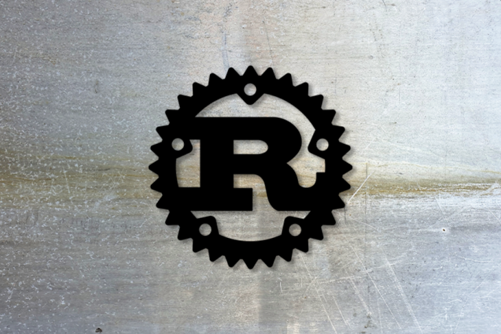
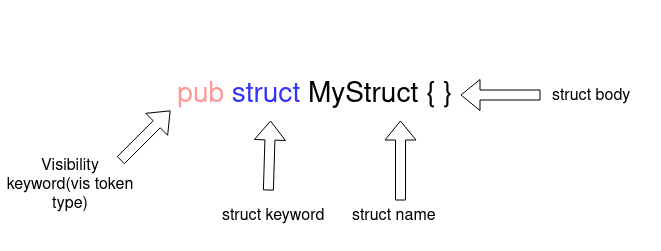
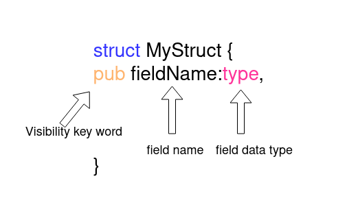

Rust 中的宏：带有示例的教程

在本篇教程中，我们将介绍有关 Rust 宏的全部内容，包括 Rust 中宏的引入以及在示例中演示如何使用 Rust 宏。
我们将包含一下内容：
什么是 Rust 中的宏？
Rust 对宏提供了出色的支持。使用宏可以编写代码，该代码可以在编译期间生成其他的代码，这被称为元编程。
宏提供了类似于函数的功能，却没有运行时成本。但是，由于在编译期间扩展了宏，因此存在一些编译时的开销。
Rust 的宏与 C 中的宏有很大的不同。Rust 宏可以应用于 token 树，但是 C 宏只能用于文本替换 (substitution)。
Rust 宏的类型
Rust 宏有两种类型：
- 声明式宏：使你能够编写类似于在 Rust 代码中作为参数运行的 match 表达式。它使用你提供的代码生成可以替换宏调用的代码。
- 过程宏：使你能够在 Rust 代码的抽象语法树 (AST) 上进行操作。过程宏是从一个(或两个)
TokenStream到另一个TokenStream的函数，其输出替换宏调用。
让我们深入学习声明式宏与过程宏，并探讨一些示例，学习如何在 Rust 中使用宏。
Rust 中的声明式宏
声明式宏通过macro_rules!来定义。声明式宏的功能性稍微差一些，但是提供了易于使用的接口来创建宏以移除重复的代码。常见的声明式宏如println!。声明式宏提供了类似 match 的接口，在匹配时，宏会被替换为对应的匹配分支内的代码。
创建声明式宏
// use macro_rules! <name of macro>{<Body>} macro_rules! add{ // macth like arm for macro ($a:expr,$b:expr)=>{ // macro expand to this code { // $a and $b will be templated using the value/variable provided to macro $a+$b } } } fn main(){ // call to macro, $a=1 and $b=2 add!(1,2); }
这段代码创建了一个可以将两个数相加的宏。[macro_rules!]与宏的名称，add以及宏的主体一起使用。
这个宏并没有将两个数相加，它只是将自己替换成了将两个数相加的代码。宏的每一个分支都携带了对应功能需要的参数，并且有多种类型可以分配给参数。如果add函数也可以采用单个参数，我们可以添加另一个分支：
macro_rules! add{ // first arm match add!(1,2), add!(2,3) etc ($a:expr,$b:expr)=>{ { $a+$b } }; // Second arm macth add!(1), add!(2) etc ($a:expr)=>{ { $a } } } fn main(){ // call the macro let x=0; add!(1,2); add!(x); }
一个宏中可以有多个分支，可以根据不同的参数扩展为不同的代码。每个分支可以采用多个参数，以$符号开头，后跟 token 的类型。
item- 项，如：函数，结构体，模块等block- 块 (语句或表达式的代码块，被大括号包含)stmt- 语句pat- 模式expr- 表达式ty- 类型ident- 标识符path- 路径(如：foo，::std::mem::replace，transmute::<_, int>，...)meta- 元项 (meta item)，即#[...]和#![...]属性中的内容tt- 单个 token 树vis- 可能为空的可见性 (Visibility) 限定词lifetime- 生命周期literal- 字面量表达式
在本例中，我们使用 token 类型为ty的$typ参数作为数据类型，如u8，u16等。在数字相加之前，这个宏会将其转换为指定的类型。
macro_rules! add_as{ // using a ty token type for macthing datatypes passed to maccro ($a:expr,$b:expr,$typ:ty)=>{ $a as $typ + $b as $typ } } fn main(){ println!("{}",add_as!(0,2,u8)); }
Rust 宏还支持传入非固定数量的参数。运算符和正则表达式非常类似。*用于 0 个或多个 token 类型，+用于 0 个或 1 个参数。
macro_rules! add_as{ ( // repeated block $($a:expr) // seperator , // zero or more * )=>{ { // to handle the case without any arguments 0 // block to be repeated $(+$a)* } } } fn main(){ println!("{}",add_as!(1,2,3,4)); // => println!("{}",{0+1+2+3+4}) }
重复的 token 类型包含在$()中，后面跟一个分隔符以及一个*或者+，表示 token 将要重复的次数。分隔符用来区分彼此的 token。后面跟*或+的$()用于表示重复的代码块。在上面的示例中，+$a是需要重复的代码。
如果你仔细看这段代码，你会发现代码中添加了一个额外的 0 来使语法有效。要删除这个 0 并使add表达式和参数一样，我们需要创建一个名为 TT muncher 的新宏。
macro_rules! add{ // first arm in case of single argument and last remaining variable/number ($a:expr)=>{ $a }; // second arm in case of two arument are passed and stop recursion in case of odd number ofarguments ($a:expr,$b:expr)=>{ { $a+$b } }; // add the number and the result of remaining arguments ($a:expr,$($b:tt)*)=>{ { $a+add!($($b)*) } } } fn main(){ println!("{}",add!(1,2,3,4)); }
TT muncher 递归式的分别处理每个 token。一次处理一个 token 比较容易。这个宏有三个分支：
- 第一个分支处理传入单个参数的情况
- 第二个分支处理传入两个参数的情况
- 第三个分支通过传入剩余的参数再次调用
add宏
宏参数不需要逗号分隔符。多个 token 可以使用不同的 token 类型。举个例子，括号可以与ident token 类型一起使用。Rust 编译器采用匹配的分支，并从参数字符串中提取变量。
macro_rules! ok_or_return{ // match something(q,r,t,6,7,8) etc // compiler extracts function name and arguments. It injects the values in respective varibles. ($a:ident($($b:tt)*))=>{ { match $a($($b)*) { Ok(value)=>value, Err(err)=>{ return Err(err); } } } }; } fn some_work(i:i64,j:i64)->Result<(i64,i64),String>{ if i+j>2 { Ok((i,j)) } else { Err("error".to_owned()) } } fn main()->Result<(),String>{ ok_or_return!(some_work(1,4)); ok_or_return!(some_work(1,0)); Ok(()) }
如果某个操作返回Err或者某个操作的值返回Ok，则ok_or_return宏返回该函数。它将函数作为一个参数并在内部的 match 语句中执行。对于传递给函数的参数，它重复的使用。
通常，需要将几个宏放在同一个宏分组中。在本例中，使用了内部的宏规则。它有助于操作宏输入并编写干净的 TT muncher。
为了创建一个内部规则，添加一个以@开头的规则名作为参数。现在，除非明确将其指定为参数，否则该宏将永远不会匹配内部规则。
macro_rules! ok_or_return{ // internal rule. (@error $a:ident,$($b:tt)* )=>{ { match $a($($b)*) { Ok(value)=>value, Err(err)=>{ return Err(err); } } } }; // public rule can be called by the user. ($a:ident($($b:tt)*))=>{ ok_or_return!(@error $a,$($b)*) }; } fn some_work(i:i64,j:i64)->Result<(i64,i64),String>{ if i+j>2 { Ok((i,j)) } else { Err("error".to_owned()) } } fn main()->Result<(),String>{ // instead of round bracket curly brackets can also be used ok_or_return!{some_work(1,4)}; ok_or_return!(some_work(1,0)); Ok(()) }
Rust 中声明式宏的高级解析
宏有时会执行需要解析 Rust 语言本身的任务。
将到目前为止我们已经介绍的概念放在一起，创建一个宏，该宏通过使pub关键字作为前缀，将结构体的可见性设置为公开。
首先，我们需要解析 Rust 结构体以获取它的名称，字段以及字段类型。
解析结构体的名称和字段
结构体的声明开头有一个可见性关键字(如pub)，后面跟struct关键字，接着是结构体的名称，最后是结构体的主体。

#![allow(unused)] fn main() { macro_rules! make_public{ ( // use vis type for visibility keyword and ident for struct name $vis:vis struct $struct_name:ident { } ) => { { pub struct $struct_name{ } } } } }
$vis对应可见性，$struct_name对应结构体的名称。为了使结构体是外部可见的，我们需要添加pub关键字并忽略$vis变量。

一个结构体中可能包含多个字段，这些字段可能具有相同或不同的数据类型以及可见性。ty token 类型用于数据类型，vis 用于可见性以及ident用于字段名。我们将使用*来重复表示 0 个或多个字段。
#![allow(unused)] fn main() { macro_rules! make_public{ ( $vis:vis struct $struct_name:ident { $( // vis for field visibility, ident for field name and ty for field data type $field_vis:vis $field_name:ident : $field_type:ty ),* } ) => { { pub struct $struct_name{ $( pub $field_name : $field_type, )* } } } } }
从结构体中解析元数据
通常结构体会有一些附加的元数据或者过程宏，如#[derive(Debug)]。此元数据需要保持不变。解析这个元数据需要使用meta类型。
#![allow(unused)] fn main() { macro_rules! make_public{ ( // meta data about struct $(#[$meta:meta])* $vis:vis struct $struct_name:ident { $( // meta data about field $(#[$field_meta:meta])* $field_vis:vis $field_name:ident : $field_type:ty ),*$(,)+ } ) => { { $(#[$meta])* pub struct $struct_name{ $( $(#[$field_meta:meta])* pub $field_name : $field_type, )* } } } } }
我们的make_public宏已经就绪。为了查看它是如何工作的，我们使用 Rust Playground 将宏扩展为已经编译的实际代码。
macro_rules! make_public{ ( $(#[$meta:meta])* $vis:vis struct $struct_name:ident { $( $(#[$field_meta:meta])* $field_vis:vis $field_name:ident : $field_type:ty ),*$(,)+ } ) => { $(#[$meta])* pub struct $struct_name{ $( $(#[$field_meta:meta])* pub $field_name : $field_type, )* } } } fn main(){ make_public!{ #[derive(Debug)] struct Name{ n:i64, t:i64, g:i64, } } }
扩展后的代码如下所示：
// some imports macro_rules! make_public { ($ (#[$ meta : meta]) * $ vis : vis struct $ struct_name : ident { $ ($ (#[$ field_meta : meta]) * $ field_vis : vis $ field_name : ident : $ field_type : ty), * $ (,) + }) => { $ (#[$ meta]) * pub struct $ struct_name { $ ($ (#[$ field_meta : meta]) * pub $ field_name : $ field_type,) * } } } fn main() { pub struct name { pub n: i64, pub t: i64, pub g: i64, } }
声明式宏的限制
声明式宏有一些限制。一些与 Rust 宏本身有关，一些是声明式宏所特有的。
- 缺少宏的自动提示与扩展的支持
- 调试声明式宏非常困难
- 有限的修改功能
- (编译后产生)超大的二进制文件
- 需要更长的编译时间(声明式宏与过程宏都有这个问题)
Rust 中的过程宏
过程宏是宏的更高级的版本。过程宏允许你扩展已存在的 Rust 语法。它接受任意的输入并返回合法的 Rust 代码。
过程宏是一个接受TokenStream作为输入并返回另一个TokenStream作为输出。过程宏操作输入的TokenStream以产生一个输出流。
这里有三种类型的过程宏：
- 属性式宏
- 派生宏
- 函数式宏
我们将会在下面详细的介绍每一种类型的过程宏。
属性式宏
属性式宏可以让你创建一个依附于某一项的自定义属性，并允许你操作该项。它还可以携带参数。
#![allow(unused)] fn main() { #[some_attribute_macro(some_argument)] fn perform_task(){ // some code } }
在上面的代码中，some_attribute_macros是一个属性宏，它操作perform_task函数。
为了写一个属性式宏，使用cargo new macro-demo --lib创建一个项目。一旦项目就绪，更新Cargo.toml来告诉项目将要创建一个过程宏。
# Cargo.toml
[lib]
proc-macro = true
现在我们开始尝试编写过程宏。
过程宏是一个接收TokenStream作为输入，并返回另一个TokenStream的函数。为了编写一个过程宏，我们需要编写一个解析器解析TokenStream。Rust 社区有一个非常棒的库：syn，用来解析TokenStream。
syn 为 Rust 语法提供了现成的解析器用来解析TokenStream。你也可以通过组合 syn 提供的更加底层的解析器来解析你的语法。
在Cargo.toml中添加syn和quote：
# Cargo.toml
[dependencies]
syn = {version="1.0.57",features=["full","fold"]}
quote = "1.0.8"
现在我们可以使用编译器为编写过程宏而提供proc_macro库在lib.rs中编写属性式宏。一个过程宏库不能导出过程宏以外的其他任何东西，并且在 crate 中定义的过程宏不能在该 crate 中使用。
#![allow(unused)] fn main() { // lib.rs extern crate proc_macro; use proc_macro::{TokenStream}; use quote::{quote}; // using proc_macro_attribute to declare an attribute like procedural macro #[proc_macro_attribute] // _metadata is argument provided to macro call and _input is code to which attribute like macro attaches pub fn my_custom_attribute(_metadata: TokenStream, _input: TokenStream) -> TokenStream { // returing a simple TokenStream for Struct TokenStream::from(quote!{struct H{}}) } }
为了测试我们添加的宏，通过创建一个名为tests的文件夹并在其中添加attribute_macro.rs文件来创建一个集成测试。在这个文件中，我们测试我们的属性式宏。
#![allow(unused)] fn main() { // tests/attribute_macro.rs use macro_demo::*; // macro converts struct S to struct H #[my_custom_attribute] struct S{} #[test] fn test_macro(){ // due to macro we have struct H in scope let demo=H{}; } }
使用cargo test命令运行上面的测试代码。
既然我们理解了过程宏的基本概念，让我们使用syn来操作并解析更高级的TokenStream。
为了学习syn是如何解析并操作TokenStream的，我们以syn的Github仓库 的一个示例为例。这个示例创建了一个在值变更时跟踪变量的 Rust 宏。
首先，我们需要弄清楚宏是如何操作它依附的代码的。
#![allow(unused)] fn main() { #[trace_vars(a)] fn do_something(){ let a=9; a=6; a=0; } }
trace_vars宏传入它需要跟踪的变量名，并且一旦传入的变量a的值发生改变，就会注入了一条打印语句。它跟踪了输入变量的值。
首先，解析属性式宏依附的代码。syn为 Rust 函数语法提供了一个内置的解析器。ItemFn将会解析函数，并且当语法是非法时抛出一个错误。
#![allow(unused)] fn main() { #[proc_macro_attribute] pub fn trace_vars(_metadata: TokenStream, input: TokenStream) -> TokenStream { // parsing rust function to easy to use struct let input_fn = parse_macro_input!(input as ItemFn); TokenStream::from(quote!{fn dummy(){}}) } }
既然我们有了已解析的输入，让我们转到元数据。对于元数据，没有内置的解析器会起作用，因此我们需要使用syn的parse模块编写我们自己的解析器。
#![allow(unused)] fn main() { #[trace_vars(a,c,b)] // we need to parse a "," seperated list of tokens // code }
为了让syn起作用，我们需要实现syn提供的Parse特征。Punctuated被用来创建一个以,分隔的Ident的向量。
#![allow(unused)] fn main() { struct Args{ vars:HashSet<Ident> } impl Parse for Args{ fn parse(input: ParseStream) -> Result<Self> { // parses a,b,c, or a,b,c where a,b and c are Indent let vars = Punctuated::<Ident, Token![,]>::parse_terminated(input)?; Ok(Args { vars: vars.into_iter().collect(), }) } } }
一旦我们实现了Parse特征，我们就可以使用parse_macro_input宏来解析元数据了。
#![allow(unused)] fn main() { #[proc_macro_attribute] pub fn trace_vars(metadata: TokenStream, input: TokenStream) -> TokenStream { let input_fn = parse_macro_input!(input as ItemFn); // using newly created struct Args let args= parse_macro_input!(metadata as Args); TokenStream::from(quote!{fn dummy(){}}) } }
现在，当变量的值变更时，我们将修改input_fn以添加println!。为了添加这个功能，我们需要过滤出赋值语句，并在该行之后插入一条打印语句。
#![allow(unused)] fn main() { impl Args { fn should_print_expr(&self, e: &Expr) -> bool { match *e { Expr::Path(ref e) => { // variable shouldn't start wiht :: if e.path.leading_colon.is_some() { false // should be a single variable like `x=8` not n::x=0 } else if e.path.segments.len() != 1 { false } else { // get the first part let first = e.path.segments.first().unwrap(); // check if the variable name is in the Args.vars hashset self.vars.contains(&first.ident) && first.arguments.is_empty() } } _ => false, } } // used for checking if to print let i=0 etc or not fn should_print_pat(&self, p: &Pat) -> bool { match p { // check if variable name is present in set Pat::Ident(ref p) => self.vars.contains(&p.ident), _ => false, } } // manipulate tree to insert print statement fn assign_and_print(&mut self, left: Expr, op: &dyn ToTokens, right: Expr) -> Expr { // recurive call on right of the assigment statement let right = fold::fold_expr(self, right); // returning manipulated sub-tree parse_quote!({ left #op #right; println!(concat!(stringify!(#left), " = {:?}"), #left); }) } // manipulating let statement fn let_and_print(&mut self, local: Local) -> Stmt { let Local { pat, init, .. } = local; let init = self.fold_expr(*init.unwrap().1); // get the variable name of assigned variable let ident = match pat { Pat::Ident(ref p) => &p.ident, _ => unreachable!(), }; // new sub tree parse_quote! { let #pat = { #[allow(unused_mut)] let #pat = #init; println!(concat!(stringify!(#ident), " = {:?}"), #ident); ident }; } } } }
在上面的示例中，quote宏用于模版化并编写 Rust。#用来插入变量的值。
现在我们将会对input_fn进行深度优先搜索 (DFS) 并插入一条打印语句。syn提供了一个Fold特征，它可以为任何Item实现 DFS。我们只需要修改与我们要操作的标记类型相对应的特征方法。
#![allow(unused)] fn main() { impl Fold for Args { fn fold_expr(&mut self, e: Expr) -> Expr { match e { // for changing assignment like a=5 Expr::Assign(e) => { // check should print if self.should_print_expr(&e.left) { self.assign_and_print(*e.left, &e.eq_token, *e.right) } else { // continue with default travesal using default methods Expr::Assign(fold::fold_expr_assign(self, e)) } } // for changing assigment and operation like a+=1 Expr::AssignOp(e) => { // check should print if self.should_print_expr(&e.left) { self.assign_and_print(*e.left, &e.op, *e.right) } else { // continue with default behaviour Expr::AssignOp(fold::fold_expr_assign_op(self, e)) } } // continue with default behaviour for rest of expressions _ => fold::fold_expr(self, e), } } // for let statements like let d=9 fn fold_stmt(&mut self, s: Stmt) -> Stmt { match s { Stmt::Local(s) => { if s.init.is_some() && self.should_print_pat(&s.pat) { self.let_and_print(s) } else { Stmt::Local(fold::fold_local(self, s)) } } _ => fold::fold_stmt(self, s), } } } }
Fold特征用于对Item进行 DFS。它可以让你对不同的 token 类型执行不同的行为。
现在我们可以使用fold_item_fn在解析的代码中注入打印语句。
#![allow(unused)] fn main() { #[proc_macro_attribute] pub fn trace_var(args: TokenStream, input: TokenStream) -> TokenStream { // parse the input let input = parse_macro_input!(input as ItemFn); // parse the arguments let mut args = parse_macro_input!(args as Args); // create the ouput let output = args.fold_item_fn(input); // return the TokenStream TokenStream::from(quote!(#output)) } }
这个代码示例来自 syn examples，这是一个非常出色的学习过程宏的资源。
自定义派生宏
在 Rust 中自定义派生宏可以自动实现特征。这些宏让你可以通过使用#[derive(Trait)]来实现该特征。
syn对派生宏有出色的支持。
#![allow(unused)] fn main() { #[derive(Trait)] struct MyStruct{} }
为了在 Rust 中编写自定义派生宏，我们可以使用DeriveInput来解析输入以派生宏。我们也可以使用proc_macro_derive宏来自定义派生宏。
#![allow(unused)] fn main() { #[proc_macro_derive(Trait)] pub fn derive_trait(input: proc_macro::TokenStream) -> proc_macro::TokenStream { let input = parse_macro_input!(input as DeriveInput); let name = input.ident; let expanded = quote! { impl Trait for #name { fn print(&self) -> usize { println!("{}","hello from #name") } } }; proc_macro::TokenStream::from(expanded) } }
使用syn可以编写更多高级的派生宏。可以在 syn examples中查看本示例。
函数式宏
函数式宏和声明式宏很像，因为它们都通过!进行调用并且看起来都很像函数调用。它们对括号内的代码进行操作。
在 Rust 中，这是如何编写函数式宏的示例：
#![allow(unused)] fn main() { #[proc_macro] pub fn a_proc_macro(_input: TokenStream) -> TokenStream { TokenStream::from(quote!( fn anwser()->i32{ 5 } )) } }
函数式宏不是在运行时执行的，而是在编译时执行的。它们可以用在 Rust 代码中的每一处地方。函数式宏同样接收一个TokenStream并返回一个TokenStream。
使用过程宏的好处包括：
- 使用
span更好的进行错误处理 - 更好的控制输出
- 社区提供的
syn和quote - 比声明式宏更强大
结论
在 Rust 宏教程中，我们涉及了 Rust 中宏的所有基础概念，定义了声明式宏和过程宏，并学习了如何通过使用各种语法以及社区提供的类库来编写这两种类型的宏。我们还介绍了使用每一种 Rust 宏的优势。